자동차정비기사 (2018-04-28 기출문제)
1과목: 일반기계공학
1. 관용나사에서 유체의 누설을 막기 위해 지정하는 테이퍼 값은?
- 1/40
- 1/25
- 1/16
- 1/10
(정답률: 63%)

2. 다음 중 스프링의 일반적인 용도로 가장 거리가 먼 것은?
- 하중 및 힘의 측정에 사용한다.
- 진동 또는 충격에너지를 흡수한다.
- 운동에너지를 열에너지로 소비한다.
- 에너지를 저축하여 놓고 이것을 동력원으로 사용한다.
(정답률: 69%)
3. 물체를 달아 올리기 위해 훅(hook) 등을 걸 수 있는 볼트는?
- T홈 볼트
- 나비볼트
- 기초 볼트
- 아이 볼트
(정답률: 77%)
4. 그림과 같이 균일 분포하중(q0)을 받고 왼쪽 끝은 고정, 오른쪽 끝은 단순 지지되어 있는 보의 A점에서의 반력은?
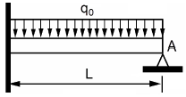
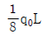
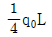
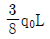
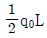
(정답률: 60%)
5. 다음 중 버니어캘리퍼스로 측정할 수 없는 것은?
- 구멍의 내경
- 구멍의 깊이
- 축의 편심량
- 공작물의 두께
(정답률: 68%)
6. 다음 중 감마(γ)철에 탄소가 최대 2.11% 고용된 γ고용체로 면심입방격자의 결정구조를 가지고 있는 것은?
- 펄라이트
- 오스테나이트
- 마텐자이트
- 시멘타이트
(정답률: 68%)
7. 다음 중 유압 및 공기압 용어에서 의미하는 표준상태는?
- 온도 0℃, 절대압 1.332kPa, 상대습도 50%인 공기상태
- 온도 0℃, 절대압 101.3kPa, 상대습도 65%인 공기상태
- 온도 10℃, 절대압 1.332kPa, 상대습도 50%인 공기상태
- 온도 20℃, 절대압 101.3kPa, 상대습도 65%인 공기상태
(정답률: 58%)
8. 다음 유압회로 명칭으로 옳은 것은?
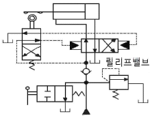
- 로크 회로
- 브레이크 회로
- 파일럿 조작회로
- 정토크 구동회로
(정답률: 52%)
9. 취성재료에서 단순인장 또는 단순 압축 하중에 대한 항복강도, 또는 인장강도나 압축강도에 도달하였을 때 재료의 파손이 일어난다는 이론은?
- 최대주응력설
- 최대전단응력설
- 최대주변형률설
- 변형률에너지설
(정답률: 43%)
10. 연삭숫돌을 구성하는 3요소가 아닌 것은?
- 조직
- 입자
- 기공
- 결합체
(정답률: 51%)
11. 용적형 펌프 중 정 토출량 및 가변 토출량으로서 공작기계, 프레스기계 등의 산업기계장치 또는 차량용에 널리 쓰이는 유압 펌프는?
- 베인 펌프
- 원심 펌프
- 축류 펌프
- 혼유형 펌프
(정답률: 62%)
12. 주조품을 제조하기 위한 모형(pattern) 중 코어 모형을 사용해야 하는 주물로 적합한 것은?
- 골격형 주물
- 크기가 큰 주물
- 외형이 복잡한 주물
- 내부에 구멍이 있는 주물
(정답률: 73%)
13. 산화알루미늄(Al2O3)분말을 마그네슘, 규소 등의 산화물과 소량의 다른 원소를 첨가하여 소결한 절삭공구로 충격에는 약하나 고속절삭에서 우수한 성능을 나타내는 것은?
- 세라믹 공구
- 고속도강 공구
- 초경합금 공구
- 다이아몬드 공구
(정답률: 66%)
14. 원형축이 비틀림을 받고 있을 때 최대 전단응력(τmax)과 축의 지름(d)과의 관계는?
- τmax∝d2
- τmax∝d3
- τmax∝(1/d2)
- τmax∝(1/d3)
(정답률: 46%)
15. 외접 원통마찰자의 축간거리가 300㎜, 원동차의 회전수가 200rpm, 종동차의 회전수가 100rpm일 때 원동차의 지름 (D1)과 종동차의 지름(D2)은 각각 몇 ㎜인가?
- D1＝400, D2＝200
- D1＝200, D2＝400
- D1＝200, D2＝100
- D1＝100, D2＝200
(정답률: 51%)
16. 직경 600㎜, 800rpm으로 회전하는 원통 마찰차로서 12.5kW를 전달시키는 힘은 약 몇 N인가? (단, 마찰계수 μ＝0.2로 한다)
- 1832
- 2488
- 4984
- 12460
(정답률: 35%)
17. 봉이 인장하중을 받을 때, 탄성한도 영역 내에서 종변형률에 대한 횡변형률의 비는?
- 탄성한도
- 포와송 비
- 횡탄성계수
- 체적 탄성계수
(정답률: 73%)
18. 프레스 가공에서 드로잉한 제품의 플랜지를 소정의 형상이나 치수로 절단하는 가공법은?
- 펀칭
- 블랭킹
- 트리밍
- 셰이빙
(정답률: 57%)
19. 산화철 분말과 알루미늄 분말을 혼합하여 연소시킬 때 발생하는 열에 의해 접합하는 용접은?
- 테르밋 용접
- 탄산가스 아크용접
- 원자수소 아크용접
- 불활성가스 금속 아크용접
(정답률: 64%)
20. 표면 경화법에서 질화법의 특징으로 틀린 것은?
- 경화층은 얇지만 경도가 높다.
- 마모 및 부식에 대한 저항이 작다.
- 담금질할 필요가 없고 변형이 작다.
- 600℃ 이하에서는 경고 감소 및 산화가 일어나지 않는다.
(정답률: 50%)
2과목: 기계열역학
21. 습증기 상태에서 엔탈피 h를 구하는 식은? (단, hf는 포화액의 엔탈피, hg는 포화증기의 엔탈피, x는 건도이다)
- h＝hf＋(xhg-hf)
- h＝hf＋x(hg-hf)
- h＝hg＋(xhf-hg)
- h＝hg＋x(hg-hf)
(정답률: 62%)
22. 온도 150℃, 압력 0.5MPa의 공기 0.2kg이 압력이 일정한 과정에서 원래 체적의 2배로 늘어난다. 이 과정에서의 일은 약몇 kJ인가? (단, 공기는 기체상수가 0.287kJ/(kg·K)인 이상기체로 가정한다.)
- 12.3kJ
- 16.5kJ
- 20.5kJ
- 24.3kJ
(정답률: 32%)
23. 증기 압축 냉동사이클로 운전하는 냉동기에서 압축기 입구, 응축기 입구, 증발기 입구의 엔탈피가 각각 241.8kJ/kg일 경우 성능계수는 약 얼마인가?(오류 신고가 접수된 문제입니다. 반드시 정답과 해설을 확인하시기 바랍니다.)
- 3.0
- 4.0
- 5.0
- 6.0
(정답률: 33%)
24. 온도가 T1인 고열원으로부터 온도가 T2인 저열원으로 열전도, 대류, 복사 등에 의해 Q만큼 열전달이 이루어졌을 때 전체 엔트로피 변화량을 나타내는 식은?
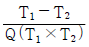
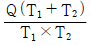
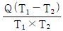
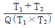
(정답률: 61%)
25. 랭킨 사이클의 열효율을 높이는 방법으로 틀린 것은?
- 복수기의 압력을 저하시킨다.
- 보일러 압력을 상승시킨다.
- 재열(reheat)장치를 사용한다.
- 터빈 출구 온도를 높인다.
(정답률: 57%)
26. 어떤 카르노 열기관이 100℃와 30℃ 사이에서 작동되며 100℃의 고온에서 100kJ의 열을 받아 40kJ의 유용한 일을 한다면 이 열기관에 대하여 가장 옳게 설명한 것은?
- 열역학 제1법칙에 위배된다.
- 열역학 제2법칙에 위배된다.
- 열역학 제1법칙과 제2법칙에 모두 위배되지 않는다.
- 열역학 제1법칙과 제2법칙에 모두 위배된다.
(정답률: 56%)
27. 이상적인 카르노 사이클의 열기관이 500℃인 열원으로부터 500kJ을 받고, 25℃에 열을 방출한다. 이 사이클의 일(W)과 효율(ηch)은 얼마인가?
- W＝307.2kJ, ηch＝0.6143
- W＝207.2kJ, ηch＝0.5748
- W＝250.3kJ, ηch＝0.8316
- W＝401.5kJ, ηch＝0.6517
(정답률: 40%)
28. 온도 20℃에서 계기압력 0.183MPa의 타이어가 고속주행으로 온도 80℃로 상승할 때 압력은 주행 전과 비교하여 약몇 kPa 상승하는가? (단, 타이어의 체적은 변하지 않고, 타이어 내의 공기는 이상기체로 가정한다. 그리고 대기압은 101.3kPa이다.)
- 37kPa
- 58kPa
- 286kPa
- 445kPa
(정답률: 51%)
29. 마찰이 없는 실린더 내에 온도 500K, 비엔트로피 3kJ/(kg·K)인 이상기체가 2kg 들어있다. 이 기체의 비엔트로피가 10kJ/(kg·K)이 될 때까지 등온과정으로 가열한다면 가열량은 약 몇 kJ인가?
- 1400kJ
- 2000kJ
- 3500kJ
- 7000kJ
(정답률: 33%)
30. 매시간 20kg의 연료를 소비하여 74kW의 동력을 생산하는 가솔린기관의 열효율은 약 몇 %인가? (단, 가솔린의 저위발열량은 43470kJ/kg이다.)
- 18
- 22
- 31
- 43
(정답률: 58%)
31. 유체의 교축과정에서 Joule-Thomosn계수 (μJ)가 중요하게 고려되는데 이에 대한 설명으로 옳은 것은?
- 등엔탈피 과정에 대한 온도변화와 압력변화의 비를 나타내며 μJ＜0인 경우 온도상승을 의미한다.
- 등엔탈피 과정에 대한 온도변화와 압력변화의 비를 나타내며 μJ＜0인 경우 온도 강하를 의미한다.
- 정적과정에 대한 온도변화와 압력변화의 비를 나타내며 μJ＜0인 경우 온도상승을 의미한다.
- 정적과정에 대한 온도변화와 압력변화의 비를 나타내며 μJ＜0인 경우 온도 강하를 의미한다.
(정답률: 42%)
32. 이상기체에 대한 관계식 중 옳은 것은? (단, Cp, Cv는 정압 및 정적 비열, k는 비열비이고, R은 기체상수이다)
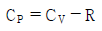
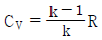
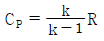
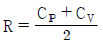
(정답률: 65%)
33. 천제연 폭포의 높이가 55m이고 주위와 열교환을 무시한다면 폭포수가 낙하한 후 수면에 도달할 때까지 온도상승은 약 몇 K인가? (단, 폭포수의 비열은 4.2kJ/(kg·K)이다)
- 0.87
- 0.31
- 0.13
- 0.68
(정답률: 34%)
34. 1kg의 공기가 100℃를 유지하면서 가역등온팽창하여 외부에 500kJ의 일을 하였다. 이때 엔트로피의 변화량은 약 몇 kJ/K인가?
- 1.895
- 1.665
- 1.467
- 1.340
(정답률: 50%)
35. 피스톤-실린더장치 내에 있는 공기가 0.3m3에서 0.1m3으로 압축되었다. 압축되는 동안 압력(P)과 체적(V)사이에 P＝aV-2의 관계가 성립하며, 계수 a＝6kPa·m6이다. 이 과정 동안 공기가 한 일은 약 얼마인가?
- -53.3kJ
- -1.1kJ
- 253kJ
- -40kJ
(정답률: 39%)
36. 다음 중 이상적인 증기 터빈의 사이클인 랭킨사이클을 옳게 나타낸 것은?
- 가역 등온압축 → 정압가열 → 가역 등온팽창 → 정압냉각
- 가역 단열압축 → 정압가열 → 가역 단열팽창 → 정압냉각
- 가역 등온압축 → 정적가열 → 가역 등온팽창 → 정적냉각
- 가역 단열압축 → 정적가열 → 가역 단열팽창 → 정적냉각
(정답률: 41%)
37. 그림과 같이 다수의 추를 올려놓은 피스톤이 장착된 실린더가 있는데, 실린더 내의 초기 압력은 300kPa, 초기 체적은 0.⑤m3이다. 이 실린더에 열을 가하면서 적절히 추를 제거하여 폴리트로픽 지수가 1.3인 폴리트로픽 변화가 일어 나도록 하여 최종적으로 실린더 내의 체적이 0.2m3이 되었다면 가스가 한 일은 약 몇 kJ인가?
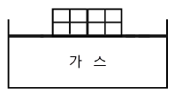
- 17
- 18
- 19
- 20
(정답률: 43%)
38. 다음의 열역학 상태량 중 종량적 상태량(extensive property)에 속하는 것은?
- 압력
- 체적
- 온도
- 밀도
(정답률: 67%)
39. 내부 에너지가 30kJ인 물체에 열을 가하여 내부에너지가 50kJ이 되는 동안에 외부에 대하여 10kJ의 일을 하였다. 이 물체에 가해진 열량은?
- 10kJ
- 20kJ
- 30kJ
- 60kJ
(정답률: 52%)
40. Brayton 사이클에서 압축기 소요일은 175kJ/kg, 공급열은 627kJ/kg, 터빈 발생일은 406kJ/kg로 작동될 때 열효율은 약 얼마인가?
- 0.28
- 0.37
- 0.42
- 0.48
(정답률: 36%)
3과목: 자동차기관
41. 가솔린엔진의 열효율을 증가시키는 방법으로 틀린 것은?
- 압축비 증가
- 흡입 저항 감소
- 운동부의 관성 증가
- 옥탄가 높은 연료사용
(정답률: 62%)
42. 전자제어 가솔린엔진의 연료장치에 대한 설명으로 틀린 것은?
- 연료 리턴 파이프나 호스가 막히면 연료압력이 높아진다.
- 연료펌프 릴리프밸브의 접촉 불량이 일어나면 연료압력이 높아진다.
- 인젝터에서 연료가 누출되면 압력이 낮아져 엔진 부조 또는 정지현상이 발생한다.
- 연료펌프의 체크밸브 열림 고착 상태에서 시동이 OFF되면 연료 압력이 급격히 낮아진다.
(정답률: 52%)
43. 분배형 연료분사펌프에 대한 설명으로 틀린 것은?
- 소형, 경량이다.
- 실린더 수와 관계없이 분사펌프는 한 개가 설치된다.
- 실린더 수 또는 최고 회전속도의 제한을 받지 않는다.
- 펌프 윤활을 위하여 특별한 윤활유를 필요로 하지 않는다.
(정답률: 47%)
44. 전자제어 디젤엔진(CRDI)의 사후분사에 대한 설명으로 옳은 것은?
- 엔진의 출력을 위한 기본분사이다.
- 연소실의 압력상승을 부드럽게 한다.
- 엔진의 폭발 소음과 진동을 감소시킨다.
- 배기가스 후처리장치의 재생을 돕는다.
(정답률: 62%)
45. 전자제어 가솔린엔진에서 시동 지연이 되는 고장원인으로 옳은 것은?
- 산소센서의 대기구멍 막힘
- 연료 압력조절기 진공호스 파손
- 캠 및 크랭크위치 센서 신호선의 단선
- 연료펌프의 체크밸브가 개방상태로 고착
(정답률: 50%)
46. 엔진에서 실린더와 피스톤 간극이 클 경우에 나타나는 현상이 아닌 것은?
- 오일소비 증대
- 압축압력의 저하
- 마찰에 의한 고착
- 엔진의 출력 저하
(정답률: 76%)
47. 엔진의 회전평형에 영향을 미치는 부품으로만 나열된 것은?
- 크랭크축, 플라이휠, 실린더헤드
- 크랭크축, 플라이휠, 실린더블록
- 크랭크축, 플라이휠, 크랭크축 풀리
- 크랭크축, 실린더헤드, 크랭크축 풀리
(정답률: 77%)
48. 신품 라디에이터 냉각수 용량이 25ℓ인데 측정하려는 라디에이터에 물을 넣었더니 15ℓ밖에 들어가지 않는다면 라디에이터 코어막힘률은?
- 20%
- 32%
- 40%
- 67%
(정답률: 60%)
49. 열막식(hot film type) 공기유량 센서의 특징으로 옳은 것은?
- 시동 OFF 후 1초간 셀프 크리닝 기능이 동작된다.
- 칼만 와류형식과 비교하여 응답성이 좋지 않은 단점이 있다.
- 열전도성이 우수하고 내구성이 뛰어난 이리듐선을 사용한다.
- 세라믹 기관에 박막 저항으로 브릿지 회로를 구성하고 있다.
(정답률: 54%)
50. 자동차엔진의 연속가변 밸브타이밍 시스템은 엔진회전수 및 차량 부하에 따라 제어되는데 이 시스템에 관한 설명으로 틀린 것은?
- 밸브 오버랩 기간을 연속적으로 변경한다.
- 캠샤프트의 위상을 연속적으로 가변한다.
- 흡기밸브의 개폐 시기는 TDC에 고정한다.
- 연속가변 밸브타이밍시스템은 엔진 제어모듈에 의해 제어된다.
(정답률: 70%)
51. 가솔린엔진에서 노크방지 대책으로 틀린 것은?
- 압축압력을 높게한다.
- 연소실 체적을 작게 한다.
- 연소실 벽 온도를 낮게한다.
- 연료의 착화온도를 높게한다.
(정답률: 47%)
52. 전자제어 스로틀장치에서 스로틀모터가 통합 제어하는 항목으로 틀린 것은?
- 정속주행 제어
- 공회전속도 제어
- 스로틀밸브 제어
- 흡·배기밸브 개폐시기 제어
(정답률: 61%)
53. 전자제어 가솔린엔진에서 흡기다기관의 부압을 이용하여 공기량을 검출하는 방식은?
- 베인방식
- 맵센서 방식
- 칼만와류 방식
- 핫와이어 방식
(정답률: 76%)
54. 흡입효율에 영향을 미치는 사항이 아닌 것은?
- 연료분사량
- 흡기관의 온도
- 흡기통로의 저항
- 밸브의 개폐시기
(정답률: 64%)
55. 디젤엔진에서 착화지연에 영향을 주는 요소로 가장 거리가 먼 것은?
- 공연비
- 연료입자의 크기
- 연료의 분무상태
- 연소실 내 공기의 온도와 압력
(정답률: 68%)
56. 가솔린엔진에서 연소실의 구비조건으로 틀린 것은?
- 밸브면적을 크게 하여 가스교환이 원활하게 한다.
- 압축행정에서 적당한 크기의 와류를 줄 수 있게 한다.
- 실린더에 진도되는 열량을 크게 하여 체적효율을 좋게 한다.
- 엔드 가스(end gas)의 영역에 적당한 냉각면적을 두어 엔드 가스의 온도를 저하시킨다.
(정답률: 41%)
57. 4계절용 부동액(long life coolant)에 대한 설명으로 가장 거리가 먼 것은?
- 동절기에 빙결을 방지한다.
- 오버 히트를 방지할 수 있다.
- 장시간 사용해도 내부 부식이 적다.
- 별도의 부동액과 혼합하여 사용한다.
(정답률: 74%)
58. LPG엔진의 특징에 대한 설명으로 틀린 것은?
- 연료봄베는 밀폐식으로 되어 있다.
- 배기가스의 CO 함유량은 가솔린엔진에 비해 적다.
- LPG가스는 영하의 온도에서 기화되지 않는다.
- 체적효율이 낮아 축출력이 가솔린엔진에 비해 낮아진다.
(정답률: 66%)
59. 가솔린 500cc를 완전연소시키는 데 필요한 공기는 약 m3인가? (단, 혼합비는 14.8, 가솔린의 비중은 0.73, 공기의 비중량은 1.206kgf/m3이다)
- 4.25
- 4.48
- 5.14
- 6.27
(정답률: 42%)
60. GDI엔진에서 연소실 내부의 온도를 낮추어 질소산화물(NOx) 생성을 감소시키는 데 관계가 있는 것은?
- DPF
- 리드밸브
- EGR밸브
- 2차 공기 공급밸브
(정답률: 78%)
4과목: 자동차새시
61. 타이어 호칭기호 185/70R 13 80Q에서 80이 의미하는 것은?
- 허용압력
- 하중치수
- 허용축중
- 생산년월
(정답률: 69%)
62. 적재상태의 변화나 하중 이동 등에 맞추어 전·후륜 제동력을 전자적으로 제어하여 이상적으로 배분함으로서 안정적인 제동이 가능하게 하는 것은?
- ABS(Anti-lock Brake System)
- TCS(Traction Control System)
- ESP(Electronic Stability Program)
- EBD(Electronic Brake-force Distribution system)
(정답률: 75%)
63. 브레이크 드럼의 구비조건으로 옳은 것은?
- 방열이 잘 되고 회전관성이 클 것
- 정적 및 동적 평형이 잡혀있을 것
- 브레이크슈 확장 시 변형이 클 것
- 브레이크 슈 마찰면의 내마멸성이 적을 것
(정답률: 62%)
64. 자동변속기 차량에서 크랭킹이 안 되는 원인으로 틀린 것은?
- 킥다운 스위치 단선 시
- 변속레버 D위치 선택 시
- P, N스위치 접점 소손 시
- 인히비터 스위치 커넥터 탈거 시
(정답률: 75%)
65. 자동 차동 제한장치(LSD)의 특징에 대한 설명으로 틀린 것은?
- 타이어의 미끄러짐을 방지한다.
- 미끄러운 노면에서 출발이 쉽다.
- 고속 직진주행에서 안정성이 좋지 않다.
- 요철 노면 주행 시 뒷부분의 흔들림을 감소시킨다.
(정답률: 76%)
66. CVT(무단변속기)에 적용된 액추에이터와 센서 중 피에조 원리를 이용한 부품은?
- 유압센서
- 회전속도센서
- 오일온도 센서
- 솔레노이드밸브
(정답률: 61%)
67. 수동변속기에서 주행 중 기어가 빠지는 원인은?
- 인터록장치가 마멸되었다.
- 변속기 오일이 과다 보충되었다.
- 각 베어링 또는 부싱이 마멸되었다.
- 변속기 내부 록킹볼 스프링 장력이 약하다.
(정답률: 48%)
68. 진공배력식 제동장치에서 진공이 누설되고 있을 때 발생하는 현상에 대한 설명으로 적절한 것은?
- 배력이 증가하고 회로 압력도 상승한다.
- 배력은 증가하고 회로 압력은 낮아진다.
- 배력이 감소학고 회로 압력도 낮아진다.
- 배력은 감소하고 회로 압력은 상승한다.
(정답률: 63%)
69. 휠 얼라인먼트 요소에 대한 설명으로 틀린 것은?
- 토인은 앞바퀴의 사이드슬립을 방지한다.
- 캐스터는 주행 시 바퀴의 방향성과 조향 시 복원력을 부여한다.
- 부(-)의 캐스터는 후류구동 차량에 주로 적용하며, 선회시 복원력이 증대된다.
- 킹핀의 연장선과 캠버의 연장선이 지면에서 만나는 거리에 따라 조향 조작력의 크기가 달라진다.
(정답률: 65%)
70. ABS 하이드로릭 유닛에서 펌프 모터에 압송되는 오일의 맥동을 감소시키고, 감압모드 시 발생하는 페달의 킥백(kick back)을 방지하는 것은?
- LPA(Low Pressure Accumulator)
- HPA(High Pressure Accumulator)
- NO(Normal Open) 솔레노이드밸브
- NC(Normal Close) 솔레노이드밸브
(정답률: 67%)
71. 단순 유성기어 장치에서 링기어가 출력, 선기어가 구동, 캐리어가 고정되었다면 링기어의 회전상태는?
- 증속
- 감속
- 역방향 증속
- 역방향 감속
(정답률: 55%)
72. 자동변속기 차량에서 출발 시 충격이 발생하고 라인압력이 높은 상태이다. 고장원인으로 가장 적절한 것은?
- 오일펌프의 누유
- 릴리프밸브의 막힘
- 압력조절밸브의 마모
- 스로틀포지션 센서의 고장
(정답률: 63%)
73. 자동차 정기검사의 제동력 측정에서 모든 축의 제동력 합은 공차중량의 몇 퍼센트 이상이어야 하는가?
- 50
- 60
- 70
- 80
(정답률: 67%)
74. 자동차의 조향핸들 조작을 가볍게 하기 위한 방법이 아닌것은?
- 저속으로 주행한다.
- 타이어의 공기압을 높인다.
- 앞바퀴 정렬을 정확히 한다.
- 자동차의 하중을 작게 한다.
(정답률: 56%)
75. 주행 저항 중에서 차량 중량을 고려하지 않고 계산할 수 있는 저항은?
- 공기저항
- 가속저항
- 구름저항
- 등판저항
(정답률: 79%)
76. 전자제어 구동력 조절장치(TCS)에서 트랙션컨트롤 유닛(TCU)의 기능으로 틀린 것은?
- 선회하면서 가속기 트레이스 제어
- 미끄러운 노면에서 제동 시 슬립제어
- 미끄러운 노면에서 가속 시 슬립제어
- 미끄러운 노면에서 출발 시 슬립제어
(정답률: 60%)
77. 중량이 1200kgf인 자동차가 100km/h의 속도로 주행하다가 10초 후 50km/h로 감속하였다면 감속력은 약 몇 kgf인가?
- 140
- 150
- 160
- 170
(정답률: 22%)
78. 현가장치의 섀시스프링에 의해 지지되는 스프링 위 질량 진동 중 회전운동에 속하지 않는 것은?
- 피칭
- 요잉
- 롤링
- 바운싱
(정답률: 62%)
79. 단면적이 15cm2인 마스터실린더의 푸시로드에 작용하는 힘이 120kgf일 때 발생하는 유압은 몇 kgf/cm2인가?
- 6
- 8
- 9
- 12
(정답률: 53%)
80. 전자제어 현가장치(ECU)에서 제어모듈(ECU)로 입력되는 신호가 아닌 것은?
- 유온센서
- 차고센서
- 조향각센서
- 스로틀포지션센서
(정답률: 74%)
5과목: 자동차전기
81. 전조등을 자동으로 점등 및 소등시키는 오토라이트 장치에 적용된 소자로 조사되는 빛에 따라서 내부 저항이 변화하는 것은?
- 서미스터
- 광전도셀
- 사이리스터
- 제너 다이오드
(정답률: 71%)
82. 기동전동기의 전류소모가 80A이고, 배터리의 전압이 12V일때 출력은 약 몇 PS인가?
- 0.9
- 1.0
- 1.3
- 1.5
(정답률: 54%)
83. 가솔린엔진에서 한 개의 실린더에서만 점화 2차 전압의 피크값이 높게 나타난다. 고장원인으로 가장 적절한 것은?
- 혼합비가 너무 농후하다.
- 압축압력이 상대적으로 너무 낮다.
- 고압 케이블의 저항이 상대적으로 너무 작다.
- 점화플러그 전극 간극이 상대적으로 너무 크다.
(정답률: 56%)
84. DLI장치에서 1번 실린더가 점화될 때 4번 실린더의 행정은? (단, 4기통으로 점화시기는 BTDC 7˚ 점화순서는 1-3-4-2이다)
- 흡입 말 행정
- 압축 말 행정
- 폭발 말 행정
- 배기 말 행정
(정답률: 35%)
85. 하이브리드 자동차에서 모터 내부의 로터 위치 및 회전수를 감지하는 것은?
- 레졸버
- 커패시터
- 액티브 센서
- 스피드센서
(정답률: 65%)
86. 자동차의 에어컨 구성부품 중에서 고온, 고압의 기체상태의 냉매를 액체상태의 냉매로 만드는 역할을 하는 것은?
- 압축기
- 응축기
- 팽창밸브
- 증발기
(정답률: 64%)
87. AQS(Air Quality System)의 설명으로 옳은 것은?
- 실내외 온도를 일정하게 유지
- 내부공기를 일정한 세기로 순환
- 내부 공기를 밖으로 배출되는 것을 방지
- 유해가스를 감지하여 차량 실내로 유입되는 것을 방지
(정답률: 69%)
88. 전기장치의 회로에서 과부하 작동을 대비한 회로 보호장치는?
- 증폭장치
- 스위칭 장치
- 서징 방지장치
- 서킷 브레이크장치
(정답률: 58%)
89. 자동차 에어컨에서 압축기 출구의 냉매 상태는?
- 고온 고압 액체상태
- 고온 고압 기체상태
- 저온 저압 액체상태
- 저온 저압 기체상태
(정답률: 58%)
90. 전자제어 점화장치에서 시동 시 초기 점화시기를 결정하기 위하여 필요한 정보를 검출하는 센서는?
- 외기온도센서
- 대기압센서
- 크랭크각 센서
- 산소센서
(정답률: 73%)
91. 그림과 같은 전조등 회로에서 흐르는 전류는 약 몇 A인가?
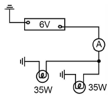
- 10.6
- 11.6
- 12.6
- 13.6
(정답률: 66%)
92. 반도체의 재료로 사용되는 물질로 옳은 것은?
- 주철, 파라핀
- 구리, 알루미늄
- 에보나이트, 유리
- 실리콘, 게르마늄
(정답률: 71%)
93. 자동차용 납산 배터리의 방전 시 일어나는 현상으로 틀린것은?
- 배터리의 전해액 비중이 상승한다.
- 전해액의 묽은황산은 물로 변한다.
- 양극판(과산화납)은 황산납으로 변한다.
- 음극판(해면상납)은 황산납으로 변한다.
(정답률: 70%)
94. Ni-Cd 배터리에서 일부만 방전된 상태에서 다시 충전하게 되면 추가로 충전한 용량 이상의 전기를 사용할 수 없게 되는 현상은?
- 스웰링 현상
- 배부름 효과
- 메모리 효과
- 설페이션 현상
(정답률: 59%)
95. HID(고휘도 방전램프) 전조등의 구성품으로 틀린 것은?
- 전구
- 밸러스트
- 세미 실드
- 이그나이터
(정답률: 51%)
96. 자기포화에 대한 설명으로 옳은 것은?
- 자화력을 증가시켜도 자기밀도가 거의 증가되지 않은 현상
- 잔류자기를 없애기 위해 반대방향으로 자화력이 가해지는 현상
- 어떤 물체가 자계 내에서 자기력의 영향을 받아 자기를 띠는 현상
- 전류가 흐르는 도체 주위에 자극을 주면 그 자극에서 발생한 자력이 작용하는 현상
(정답률: 57%)
97. 자동차 충전장치의 충전경고등이 점등된 원인과 거리가 먼 것은?
- 배터리 방전
- IC 레귤레이터 결함
- 스테이터 코일 결함
- 충전회로와 연결된 전선의 결함
(정답률: 53%)
98. 자동차 정기검사의 등화장치 검사 시 좌우측 전조등 주광축의 상향 진폭은 몇 ㎝ 이내이어야 하는가?
- 5
- 10
- 15
- 30
(정답률: 65%)
99. 전조등 검사 시 전조등의 주광축이 틀러지는 원인으로 틀린것은?
- 타이어 공기압 부족
- 전조등 설치부의 스프링 마모
- 전구의 장시간 사용에 따른 열화
- 시험기와 차량 중심이 직각이 아닐 경우
(정답률: 69%)
100. 자동차 정기검사에서 등화장치 검사 시 광도 및 광축 측정을 위한 조건으로 틀린 것은?
- 충전장치가 정상인 상태
- 원동기가 최고 회전인 상태
- 타이어 공기압이 적정한 상태
- 운전자 1인이 승차한 공차상태
(정답률: 71%)